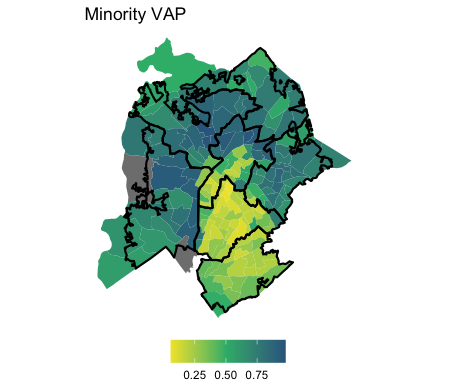
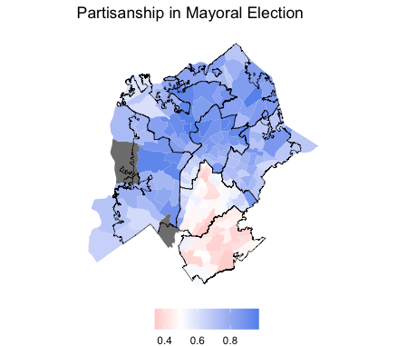
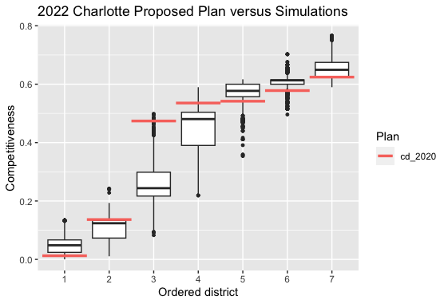
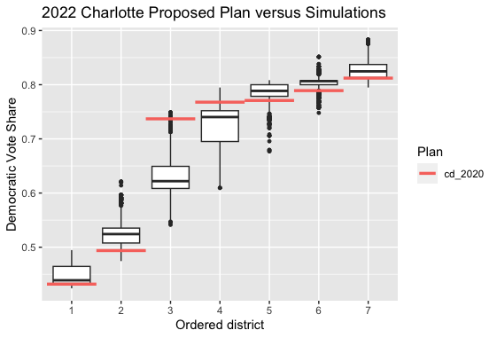
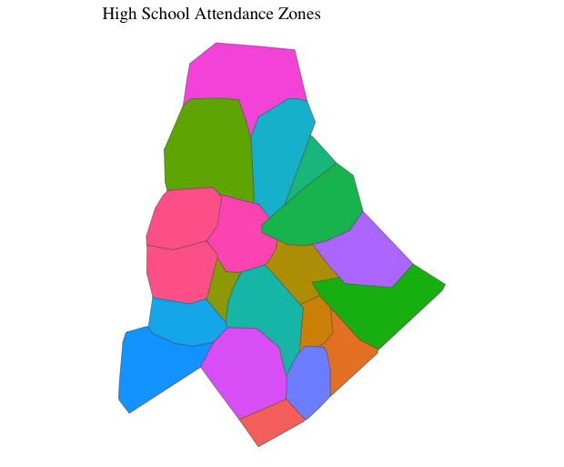
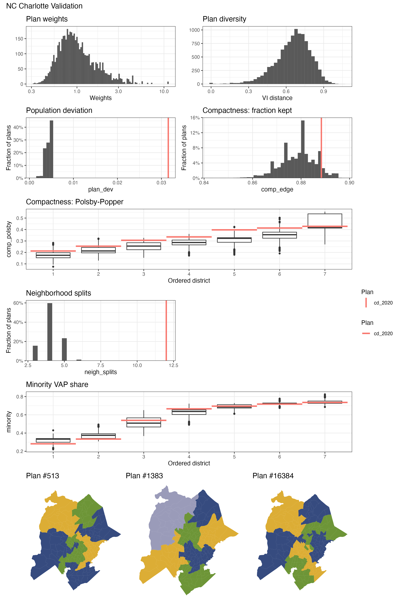

GUEST POST: Competitiveness in Charlotte, North Carolina
Analyzing competitiveness in Charlotte, North Carolina city council elections, as well as its influence on partisanship of each district.
This post is part of our ALARM Summer Research program, where social scientists in training study redistricting analysis to learn skills in computational social science. The results do not necessarily reflect findings of the broader ALARM team, and are not intended to be used as evidence or recommendations.
Competitiveness in Charlotte City Council Elections
Charlotte, North Carolina is a fascinating city where the levels of competition in mayor and city council elections have undergone significant changes in the last few years alone. By competition, in general, we mean how close the candidates in each election were in percentages. The city remains heavily Democratic from year to year. However, the level of competition candidates face each election cycle has changed significantly. Consider the mayoral elections, for example: in 2015, 52.26% voted Democrat and 47.60% voted Republican, whereas in 2022, 68.59% voted Democrat and 31.25% voted Republican. There is a clear decrease in competitiveness of mayoral elections during this time.
However, taking a look at the city council election results shows that the partisan breakdown has not shifted once, with 5 Democratic districts and 2 Republican districts. Furthermore, the competitiveness in city council election varies greatly by district. The 5 Democratic districts have won with 95%, 82%, 77%, 95%, and 95% of the votes, whereas the 2 Republican districts have won with 51% and 89% of the votes. On average, the two Republican districts had much more competitive elections for city council.
The city council election results do not seem to fully align with the mayoral election results, as the former shows a lack of significant change in the partisan breakdown of the city whereas the latter indicates that there has been a notable change in favor of the Democratic party. As a result, this blog post will be exploring the reasons behind this by analyzing the expected competitiveness of city council elections and the expected partisan breakdown with simulations.
The overall results indicate that the competitiveness in the enacted city council map largely cancels out compared to the competitiveness in the simulations. However, the slight variation in competitiveness in specific city council districts highlights that one district is expected to be Democratic in the simulations but is Republican in the current map. This explains the lack of a shift in city council partisanship despite the significant overall shift in partisanship in Charlotte, as one of the current Republican city council districts should most likely be Democratic.
Overview of Charlotte
The Charlotte City Council is made of the Mayor, four at-large city council members, and one more city council member for each of the seven city council districts. Currently, of the seven city council districts, five are Democratic and two are Republican.
The demographic breakdown in Charlotte is around 40% White, 33% Black, 16% Hispanic, and 7% Asian.

Figure 1: The map above shows the percentage of minorities in each precinct, where yellow indicates smaller percentages and blue indicates larger percentages, with the city council districts outlined by the thick black lines. Grey areas had no recorded population.
The partisan breakdown in Charlotte is 69% Democrat and 31% Republican according to the latest 2022 mayoral election.

Figure 2: The map above shows the partisan breakdown of Charlotte based on the latest mayoral election, where red indicates Republican and blue indicates Democratic, with the city council districts outlined by the thick black lines. Grey areas had no recorded population.
Analyzing Competitiveness and Partisanship In City Council Elections with Simulated Districts
Election data from the 2022 mayoral election and city council at-large elections generated one set of redistricting simulation using the Sequential Monte Carlo (SMC) algorithm. For each of the simulations, a measure of competitiveness in each district is calculated as the absolute value of the difference in Democratic and Republican votes, divided by the total number of votes. This measure of competitiveness allowed for the comparison of which districts were more competitive without focusing on which party it favored yet. The measure of competitiveness described is always from zero to one, where lower values indicate more competition and higher values indicate less competition. I then calculated the competitiveness by district for simulated plans based on the 2022 mayoral election and city council at-large election to see if the currently enacted plan is more or less competitive compared to the simulations.

Figure 3: The box-plot above shows the competitiveness in each city council district in order from most competitive to least competitive. The red lines indicate the enacted plan.
Considering the plot, we can see that there are four districts (1, 5, 6, 7) that are more competitive in the enacted plan and three districts (2, 3, 4) that are less competitive in the enacted plan than the simulations. The currently enacted plan is also on the border of or outside of the 25% to 75% range on the box-plot for all seven of these districts, so it is clearly an outlier compared to the simulations.
Now we can consider the expected partisan breakdown in order to recognize the way the differing levels of competitiveness may have contributed to the city council partisan distribution. We can do this by considering the actual partisanship of each district versus the expected partisanship of each district across the simulations.

Figure 6: The above boxplot shows the democratic vote share of simulation plans. The red line indicates the currently enacted plan.
By looking at this box plot, it is clear that six of these districts should be Democratic according to the simulations, but there are only five Democratic districts in the currently enacted plan. One of the districts that is currently Republican should be Democratic according to the simulations we ran.
We can recognize that the second ordered district is the one we are concerned about, as it is right on the edge between Democratic and Republican. More importantly, the plot shows us that in at least 75% of the simulations, the district is Democratic, which indicates that the enacted map is an anomaly.
These plots explain the difference between the partisan shift in the mayor election and in the city council election in Charlotte.
Methods and Materials
Methods
30,000 redistricting plans for Charlotte, North Carolina were sampled over two independent runs of the SMC algorithm, then thinned the sample down to 5,000 plans.
For constraints, the neighborhood map was created with high school attendance zones in Charlotte. We use neighborhood maps when producing redistricting simulations as many cities attempt to preserve communities of interest when drawing new district maps in order to avoid splitting a single neighborhood into multiple city council districts. The high school attendance zones work well because communities of interest are very often linked by schools. Other potential neighborhood zones, like the Neighborhood Statistical Areas, historical districts, and Zip Codes were tested, but did not provide any benefit as a constraint because the neighborhood areas were not large enough or lacked coverage over the entire city. The neighborhood plot of school zones is shown below.

When running simulations, we must also comply with the Voting Rights Act (VRA). VRA compliance attempts to prevent gerrymandering that disadvantages minority populations by requiring a certain number of minority-majority districts in which minorities can elect their candidate of choice. These districts are often created with a hinge constraint. These constraints work by creating a list of target percentages for each district and penalizing simulated maps based on adherence to those target percentages. Hinge constraints can then encourage the creation of more majority-minority districts for the purpose of VRA compliance. However, VRA compliance through the creation of these majority-minority districts is only required if voting patterns are polarized based on race. However, given that Charlotte is a very Democratic city on the whole, there is not a clear racial voting pattern that would indicate the need for the creation of more majority-minority districts. Most people vote Democrat no matter their race. As a result, we did not need a hinge constraint for VRA compliance. The minority VAP performance plot is shown below, which indicates the percentage of the minority VAP population by district, with red and blue indicating Republican and Democrat, respectively.

Here are the other validation plots from running on the Charlotte 2022 election data. These validation plots are used to ensure that the simulations produced satisfy the conditions required for a redistricting map. The plan diversity map indicates that most plans are unique from one another, reducing the number of repeats throughout the simulations. The population deviation graph indicates the percent difference in population compared to a completely equal split of the population in each district. On this count, we do significantly better than the enacted plan. Compactness is important to redistricting maps, as districts that are not compact can signal gerrymandering. This is measured in two different ways, and both methods of calculating compactness show that the simulated plans tended to be more compact than the enacted plan. In terms of neighborhood splits, our simulations in fact perform significantly better. Similarly, the simulated plans do significantly better at reducing neighborhood splits compared to the enacted plan. Furthermore, the simulated plans show a similar number of majority-minority VAP districts. As a result, the Charlotte redistricting simulations perform very well in each of these important factors.

Data
Election data came from the 2015 Mayoral election and the 2022 Mayoral and city council at-large elections. The North Carolina State Board of Elections organizes the election data by precinct, after which I kept only the candidates who were Democrats or Republicans in order to more clearly analyze the partisan competitiveness. One precinct with no voting data was removed, as well.
The Charlotte council district and precinct maps came from the City of Charlotte Open Data Portal. The precinct map of Charlotte was merged with the precinct election data, which was then filtered down to the council district boundaries.
Sources are linked below.
Conclusion
The competitiveness of elections in Charlotte has heavily impacted the city council election results and districts. We can see that the level of competitiveness in each individual district in the currently enacted plan is an outlier in comparison to the simulated plans. By analyzing the results of these simulations, we have discovered that the current enacted plan benefits the Republican party as one seat that is expected to be a Democratic seat is instead a Republican seat. Out of just seven districts in Charlotte, one seat is fairly large difference.
I focused mostly on competitiveness as well as how that impacted the partisan breakdown of the Charlotte city council for this blog post. In the future, I would like to look into analyzing the amount of harm these changes make for the individuals living in one district or another in order to better understand the actual impact certain plans have on the individuals in those areas.